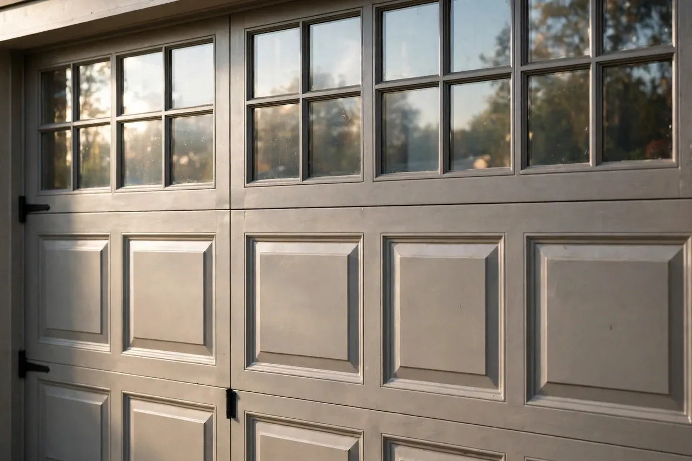

Emergency Garage Door Repair
Emergency Garage Door Repair in Zion, IL
An emergency is a garage door problem that leaves the home unsecured, traps a car, or makes the door unsafe to use. Emergency garage door repair in Zion, IL starts with triage: what the door is doing, whether it is stuck open or shut, and what not to do while waiting. Milwaukee Garage Doors Inc is open 24 hours, every day. Call (224) 842-7761 and describe the fault. This page explains what counts as an emergency and routes each fault type to the repair page that explains it.
Service overview
What Counts as a Garage Door Emergency?
Four situations count as emergencies in the emergency definitions used on garage door service pages: a door stuck open that cannot secure the home, a car trapped inside or outside, a door hanging or fallen, and a spring or cable failure that makes the door unsafe. Each is a triage question first: what the door is doing, and whether the opening can be secured.
Not every fault is an emergency. A noisy door that still travels, a remote that works only up close, or a door that moves slowly is usually a repair or maintenance question, covered on the garage door repair in Zion, IL and garage door maintenance and tune-ups in Zion, IL pages. A door that will not close, or closes then reopens, is an opener-system question on the garage door opener repair and installation in Zion, IL page unless the home is left unsecured, in which case it is triaged here first.

Practical benefits
What to Do While Waiting
While waiting, the guidance is about what not to do. Forcing a door or running the opener against a fault makes the original failure worse and can make a stuck door unsafe.
Do Not Force the Door
Do not push, pull, or lift a stuck, crooked, or hanging door into place. Forcing bends more hardware, pops rollers that were still in the rail, and can turn a jammed door into a fallen one. Leave the door where it is.
Do Not Keep Running the Opener
Do not keep pressing the remote or wall button when the door will not travel. Running the opener against a jam strains the parts that were still working and does not clear the fault. Stop operating the door.
Secure the Opening Only If Safe
General guides frame securing the opening as something to do only if it is safe to do so. If the door cannot be secured without forcing it or going under a hanging door, leave it and keep people clear. Security through another entrance is a household decision, not a door repair.
Keep People Clear of a Hanging Door
A door hanging on one side, or a door that has dropped, is held by whatever hardware is still engaged. Keep people, children, and pets clear of it, and do not stand under it to inspect the failure. Observation from a distance is enough for the call.
What a Call Typically Establishes, in General Terms
What the Call Establishes
The call is triage. It establishes what the door is doing, whether the home can be secured, what not to do next, and which repair page explains the fault. No repair depth is covered here: each fault type links onward. That outline is general-guide language: the exact contents of any call are not asserted here as this business's process, and what a call covers depends on the situation described.
STEP 01
Stuck Open or Stuck Shut
The first triage question is the door's position: stuck open, stuck shut, or stuck halfway. Stuck open is a security question. Stuck shut with a car inside is an access question. The two are handled differently, so the distinction is established first.
Triage information
Information That Helps on the Call
Stuck Open or Stuck Shut: What to Say First
The door's position is the first fact: open, shut, or halfway. It decides whether the question is security, access, or both, and it is the first thing to say on the call.
What Happened Just Before
A bang, a bump, a storm, or nothing noticed at all. What happened just before the failure narrows the fault type before any part is named.
Sounds the Door Made
A bang, grinding, squeaking, or humming each point in a different direction. Sounds are observed, not diagnosed: the description helps routing, and the diagnosis belongs on the system pages.
Door Position and Posture
Crooked, level, hanging on one side, or fallen. Posture is observable from a distance and says a lot about whether the failure is in the track system, the counterbalance, or the door leaf.
Cable Visible
A cable hanging loose, frayed, or off its drum is observable without touching anything. Cables work under tension: observe and report, and do not handle them.
Opener Behavior
Whether the opener hums, clicks, does nothing, or runs while the door stays still. Opener behavior is observation for the call; opener diagnosis is on the opener page.
Whether a Car Is Trapped
A car trapped inside or outside changes the shape of the problem from security to access, or to both. Say so on the call: it is a triage fact, not a detail.
Whether the Home Can Be Secured Another Way
Whether another entrance secures the home while the garage door stands open. This is a household question that shapes how urgent the open door itself is.
Door Age and History, If Known
The door's approximate age, and whether it has had spring, cable, or opener work before, if known. Unknown history is itself useful information: the call establishes what is known rather than assuming a record exists.
What Not to Touch
Springs and cables under tension are not to be touched, adjusted, or released. This page gives no repair instructions for tensioned parts. Observation from a distance is the whole of the homeowner's role here.

Where this service fits
Emergency Situations, and Where Each Is Explained
A Spring Failure With a Car Trapped
A loud bang, then a door too heavy to lift, with a car inside. The triage is here; the explanation of broken springs, torsion and extension types, and the paired-replacement question is on the garage door spring replacement in Zion, IL page. Do not force the door and do not keep running the opener.
A Door Off Its Track, Hanging Crooked
A door hanging on one side after a bang or a bump, with rollers out of the rail. The triage is here; the explanation of tracks, rollers, cables, and hinges is on the garage door off-track repair in Zion, IL page. Keep people clear of the hanging door.
A Door That Will Not Close, Leaving the Home Open
A door that will not close, or closes then reopens, leaving the garage unsecured. The triage is here; the explanation of sensors, auto-reverse, and opener behavior is on the garage door opener repair and installation in Zion, IL page. Do not force the door shut.
A Door Hanging or Fallen After an Impact
A door hanging or fallen after a vehicle bump or a falling object. The triage is here; section damage is explained on the garage door panel replacement in Zion, IL page and track damage on the off-track page. Keep people clear and leave the door where it is.
Local execution
Emergencies in Zion's Housing Stock
Central Zion
Median year built 1950, with alley-loaded detached garages characteristic of the older grid. A stuck-open rear-access door is a security question first, and door ages vary widely across the grid.
South Central Zion
Median year built 1934, the oldest housing grouping in the city. Alleyways with garages are evidenced, and service history on the oldest doors is unknown.
Kedron Park
Gravel back alleys lined with detached garages and carports, with 1950s to 1970s stock. Rear-access doors and alley grading at the threshold are the local topics when a door fails open.
West Zion
The western sector parent, median year built 1998, with attached, garage-forward, two- to three-car garages. A stuck door here is usually an attached-garage question, with the home's other entrances part of the triage.
Cold Weather Stiffening
Cold-stiffened springs, brittle seals, and opener strain in cold weather are general-guidance failure language, not measured Zion patterns. January mean temperatures run around 20°F, with about 38 inches of snow a year in the nearest long-record normals.
Older Doors, Unknown History
88.9% of Zion housing was built before 2000 and 64.4% before 1980 (ACS 2020–2024 5-year). Door and opener ages cannot be inferred from house age alone, and service history cannot be assumed, which is why the call establishes history rather than assuming it.
Alley Garages and Rear Access
Alley-loaded detached garages remain characteristic of the older grid. Rear-access security is a listed topic for these doors: a stuck-open alley door is assessed for security first, before any repair question.
Problems we solve
Fault Types, Routed to the Right Page
Each fault type below gets one short section and a link onward. Repair depth lives on the system pages, not here.
Broken Spring: Door Too Heavy to Lift
A loud bang followed by a door that will not lift, feels extremely heavy, or opens a few inches then stops. The explanation, including torsion and extension types, is on the garage door spring replacement in Zion, IL page.
Cable Failure: Door Stuck Open
A snapped, frayed, or off-drum cable drops one side and can leave the door stuck open or hanging crooked. The explanation of cables, drums, and brackets is on the garage door off-track repair in Zion, IL page.
Opener Failure: Door Will Not Close
An opener that hums without moving the door, a door that closes then reopens, or a blinking sensor light. The explanation of opener, sensor, and auto-reverse behavior is on the garage door opener repair and installation in Zion, IL page.
Impact Damage: Door Hanging or Fallen
A door hanging or fallen after a vehicle bump or falling object, with section, track, or hinge damage. Section damage is on the garage door panel replacement in Zion, IL page, track damage on the off-track page, and general triage on the garage door repair in Zion, IL page.


Garage door work in Zion, IL.
Clear explanationsCareful workOpen 24 hours, every dayBased in Zion, IL
Codes and safety
Codes and Safety in Zion
Safety rules do not change because a situation is urgent. The statements below are the only code, permit, and licence statements this page makes. Springs and cables under tension are technician-only work, and a door that is hanging or fallen should be left alone and kept clear of.
- Zion has adopted the 2021 International Building Code and 2021 International Residential Code, effective January 1, 2025, with local amendments.
- Illinois does not issue a statewide licence covering garage-door work; the only general building-trade contractor licences issued statewide are for roofing and plumbing. Whether City of Zion contractor registration applies to garage-door contractors was not confirmed — ask the City of Zion Building Department.
- Federal rules (16 CFR Part 1211, UL 325) require residential automatic garage door operators to have entrapment protection: an inherent reversal system plus a secondary entrapment protection device (such as photoelectric sensors or an edge sensor) or a constant-contact control. Test sensors and auto-reverse regularly.
- No Illinois battery-backup mandate for garage door openers was found.
- Whether a City of Zion permit is required for garage-door work, and any fee, was not confirmed on a City source. Contact the City of Zion Building Department, 2828 Sheridan Road, (847) 746-4018, before work begins.

Where we work
Garage Door Work Across Zion, IL
Central ZionSouth Central ZionBeulah ParkJoannaHermonKedron ParkWest ZionHarbor RidgeShepherds CrossingLorelei AcresStonebridge CrossingSunset RidgeCypress ParkCountrywood HillsBrighton PondsButterfield PlaceWestside HillsHighland MeadowsSheridan HillsSheridan LakeSheridan Lake ViewBartletts North Shore Acres
View all Zion areas Notes from local customers
What Zion Customers Say
The crew was proficient and competent, and they made my garage seem better than before.
Premium components were used to rebuild my garage door for reasonably low running cost.
I had a thorough safety check on my garage door, the technician was very detailed.
Four situations count: a door stuck open that cannot secure the home, a car trapped inside or outside, a door hanging or fallen, and a spring or cable failure that makes the door unsafe. A noisy door that still travels is usually a repair or maintenance question, not an emergency.
Do not force the door, and do not keep running the opener. Secure the opening only if it is safe to do so without forcing the door or going under a hanging one. Keep people clear of a hanging or fallen door, and observe the fault from a distance for the call.
Open 24 hours, every day. Call (224) 842-7761 and describe the fault: whether the door is stuck open or shut, what it did, and whether the opening can be secured.
No. Forcing a stuck door bends more hardware, can pop rollers out of the rail, and can turn a jammed door into a fallen one. Leave the door where it is, stop running the opener, keep people clear, and describe the fault by phone.
Noise alone is usually a repair or maintenance question. Grinding points toward rollers or track, squeaking toward lubrication or roller wear, and humming toward the opener. Emergency framing is for doors that leave the home unsecured, trap a car, or are unsafe to use.
Keep exploring
Garage Door Services That Explain Each Fault
Open 24 hours, every day
Need Garage Door Help in Zion?
Call (224) 842-7761 and describe what the door is doing: stuck open or shut, what it did, and whether the opening can be secured. Open 24 hours, every day.
Start with the basics
Call Milwaukee Garage Doors Inc
Reach us at (224) 842-7761. Say whether the door is stuck open or shut, what it did, and whether the opening can be secured. Open 24 hours, every day.
CALL(224) 842-7761
HOURSOpen 24 hours, every day